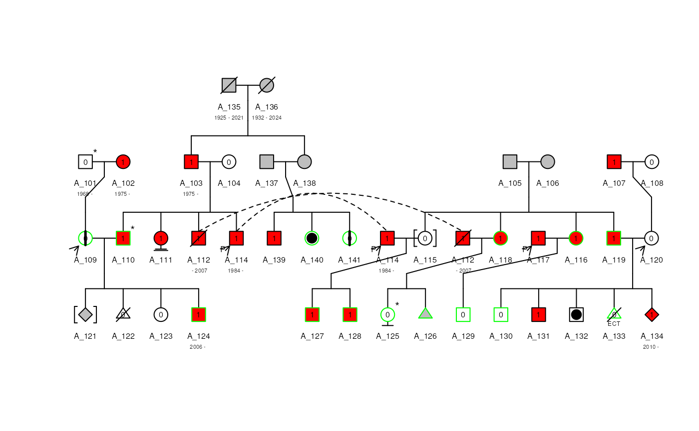

Pedigree object
Terry Therneau, Elizabeth Atkinson, Louis Le Nézet
09 February, 2025
Source:vignettes/pedigree_object.Rmd
pedigree_object.RmdIntroduction
The pedigree routines came out of a simple need – to quickly draw a Pedigree structure on the screen, within R, that was “good enough” to help with debugging the actual routines of interest, which were those for fitting mixed effecs Cox models to large family data. As such the routine had compactness and automation as primary goals; complete annotation (monozygous twins, multiple types of affected status) and most certainly elegance were not on the list. Other software could do that much better.
It therefore came as a major surprise when these routines proved useful to others. Through their constant feedback, application to more complex pedigrees, and ongoing requests for one more feature, the routine has become what it is today. This routine is still not suitable for really large pedigrees, nor for heavily inbred ones such as in animal studies, and will likely not evolve in that way. The authors fondest hope is that others will pick up the project.
Pedigree Constructor
Arguments
The Pedigree function is the first step, creating an object of class Pedigree. It accepts the following input
-
ped_dfA dataframe containing the columns-
idA numeric or character vector of subject identifiers. -
dadidThe identifier of the father. -
momidThe identifier of the mother. -
sexThe gender of the individual. This can be a numeric variable with codes of1=male,2=female,3=unknown,4=terminated, or NA=unknown. A character or factor variable can also be supplied containing the above; the string may be truncated and of arbitrary case. -
availOptional, a numeric variable with0=unavailable and1=available. -
affectedOptional, a numeric variable with0=unaffected and1=affected. -
deceasedOptional, a numeric variable with0=alive and1=dead. -
famidOptional, a numeric or character vector of family identifiers. -
sterilOptional, a numeric variable with0=not steril and1=steril.
-
-
rel_dfOptional, a data frame with three columns or four columns.-
id1identifier values of the subject pairs -
id2identifier values of the subject pairs -
coderelationship codification :1=Monozygotic twin,2=Dizygotic twin,3=twin of unknown zygosity,4=Spouse. -
famidOptional, a numeric or character vector of family identifiers.
-
-
cols_ren_pedOptional, a named list for the renaming of theped_dfdataframe -
cols_ren_relOptional, a named list for the renaming of therel_dfdataframe -
normalizeOptional, a logical to know if the data should be normalised. -
hintsOptional, a list containing the horder in which to plot the individuals and the matrix of the spouse.
Notes
Note that a factor variable is not listed as one of the choices for the subject identifier. This is on purpose. Factors were designed to accomodate character strings whose values came from a limited class – things like race or gender, and are not appropriate for a subject identifier. All of their special properties as compared to a character variable turn out to be backwards for this case, in particular a memory of the original level set when subscripting is done.
However, due to the awful decision early on in S to automatically turn every character into a factor — unless you stood at the door with a club to head the package off — most users have become ingrained to the idea of using them for every character variable.
(I encourage you to set the global option
stringsAsFactors = FALSE to turn off autoconversion – it
will measurably improve your R experience).
Therefore, to avoid unnecessary hassle for our users the code will accept a factor as input for the id variables, but the final structure does not retain it. Gender and relation do become factors. Status follows the pattern of the survival routines and remains an integer.
Column renaming
Based on the dataframe given for ped_df and
rel_df and their corresponding named list, the columns are
renamed for them to be used correctly. The renaming is done as
follow
rel_df <- data.frame(
indId1 = c("110", "204"),
indId2 = c("112", "205"),
code = c(1, 2),
family = c("1", "2")
)
cols_ren_rel <- list(
id1 = "indId1",
id2 = "indId2",
famid = "family"
)
## Rename columns rel
old_cols <- as.vector(unlist(cols_ren_rel))
new_cols <- names(cols_ren_rel)
cols_to_ren <- match(old_cols, names(rel_df))
names(rel_df)[cols_to_ren[!is.na(cols_to_ren)]] <-
new_cols[!is.na(cols_to_ren)]
print(rel_df)## id1 id2 code famid
## 1 110 112 1 1
## 2 204 205 2 2Normalisation
If the normalisation process is selected
normalize = TRUE, then both dataframe will be checked by
their dedicated normalization function. It will ensure that all
modalities are written correctly and set up the right way. If a
famid column is present in the dataframe, then it will be
aggregated to the id of each individual and separated by an ’’_’’ to
ensure the uniqueness of the individuals identifiers.
library(Pedixplorer)
data("sampleped")
cols <- c("sex", "id", "avail")
summary(sampleped[cols])## sex id avail
## Min. :1.000 Length:55 Min. :0.0000
## 1st Qu.:1.000 Class :character 1st Qu.:0.0000
## Median :1.000 Mode :character Median :0.0000
## Mean :1.491 Mean :0.4364
## 3rd Qu.:2.000 3rd Qu.:1.0000
## Max. :2.000 Max. :1.0000
ped <- Pedigree(sampleped)
summary(as.data.frame(ped(ped))[cols])## sex id avail
## male :28 Length:55 Mode :logical
## female :27 Class :character FALSE:31
## unknown : 0 Mode :character TRUE :24
## terminated: 0Errors present after the normalisation process
If any error is detected after the normalisation process, then the normalised dataframe is gave back to the user with errors column added describing the encountered problems.
rel_wrong <- rel_df
rel_wrong$code[2] <- "A"
df <- Pedigree(sampleped, rel_wrong)## Warning in .local(obj, ...): The relationship informations are not valid. Here
## is the normalised relationship informations with the identified problems
print(df)## id1 id2 code famid error
## 1 1_110 1_112 MZ twin 1 <NA>
## 2 2_204 2_205 <NA> 2 code_not_recogniseValidation
Now that the data for the Pedigree object creation are ready, they
are given to a new Pedigree object, trigerring the
validation process.
This validation step will check up for many errors such as:
- All necessary columns are present
- No duplicated
id - All
momidanddadidare present inid -
sexcolumn only contain “male”, “female”, “unknown” or “terminated” values -
steril,deceased,avail,affectedonly contains 0, 1 or NA values - Father are males and Mother are females
- Twins have same parents and MZ twins have same sex
- Hints object is valid and ids contained is in the Ped object
- …
Pedigree Class
After validation an S4 object is generated. This new concept make it possible to easily setup methods for this new type of object. The controls of the parameters is also more precise.
The Pedigree object contains 4 slots, each of them
contains a different S4 object
containing a specific type of information used for the Pedigree
construction.
-
peda Ped object for the Pedigree information with at least the following slots:-
idthe identifiers of the individuals -
dadidthe identifiers of the fathers -
momidthe identifiers of the mothers -
sexthe gender of each individuals
-
-
rela Rel object describing all special relationship beetween individuals that can’t be descibed in thepedslot. The minimal slots needed are :-
id1the identifiers of the 1st individuals -
id2the identifiers of the 2nd individuals -
codefactor describing the type of relationship (“MZ twin”, “DZ twin”, “UZ twin”, “Spouse”)
-
-
scalesa Scales object with two slots :-
filla dataframe describing which modalities in which columns correspond to an affected individuals. Plotting information such as colour, angle and density are also provided -
bordera dataframe describing which modalities in which columns to use to plot the border of the plot elements.
-
-
hintsa Hints object with two slots :-
hordernumeric vector for the ordering of the individuals plotting -
spousea matrix of the spouses
-
For more information on each object:
Pedigree accessors
As the Pedigree object is now an S4 class, we have made available a number of accessors. Most of them can be used as a getter or as a setter to modify a value in the correponding slot of the object
Focus on mcols()
The mcols() accessors is the one you should use to add
more informations to your individuals.
ped <- Pedigree(sampleped)
mcols(ped)## DataFrame with 55 rows and 5 columns
## affection num error affection_mods avail_mods
## <integer> <integer> <character> <numeric> <numeric>
## 1 0 2 NA 0 0
## 2 1 3 NA 1 0
## 3 1 2 NA 1 0
## 4 0 4 NA 0 0
## 5 NA 6 NA NA 0
## ... ... ... ... ... ...
## 51 0 2 NA 0 0
## 52 0 1 NA 0 1
## 53 0 3 NA 0 1
## 54 0 2 NA 0 0
## 55 1 0 NA 1 1
## Add new columns as a threshold if identifiers of individuals superior
## to a given threshold for example
mcols(ped)$idth <- ifelse(as.numeric(
stringr::str_split_i(id(ped(ped)), "_", 2)
) < 200, "A", "B")
mcols(ped)$idth## [1] "A" "A" "A" "A" "A" "A" "A" "A" "A" "A" "A" "A" "A" "A" "A" "A" "A" "A" "A"
## [20] "A" "A" "A" "A" "A" "A" "A" "A" "A" "A" "A" "A" "A" "A" "A" "A" "A" "A" "A"
## [39] "A" "A" "A" "B" "B" "B" "B" "B" "B" "B" "B" "B" "B" "B" "B" "B" "B"Pedigree methods
With this new S4 object comes multiple methods to ease the use of it:
plot()summary()print()show()as.list()[shrink()generate_colors()is_informative()kindepth()kinship()make_famid()upd_famid()num_child()unrelated()useful_inds()
## We can change the family name based on an other column
ped <- upd_famid(ped, mcols(ped)$idth)
## We can substract a given family
ped_a <- ped[famid(ped(ped)) == "A"]
## Plot it
plot(ped_a, cex = 0.5)
## Do a summary
summary(ped_a)## Pedigree object with
## [1] "Ped object with 41 individuals and 6 metadata columns"
## [1] "Rel object with 0 relationshipswith 0 MZ twin, 0 DZ twin, 0 UZ twin, 0 Spouse"
## Coerce it to a list
as.list(ped_a)[[1]][1:3]## $id
## [1] "A_101" "A_102" "A_103" "A_104" "A_105" "A_106" "A_107" "A_108" "A_109"
## [10] "A_110" "A_111" "A_112" "A_113" "A_114" "A_115" "A_116" "A_117" "A_118"
## [19] "A_119" "A_120" "A_121" "A_122" "A_123" "A_124" "A_125" "A_126" "A_127"
## [28] "A_128" "A_129" "A_130" "A_131" "A_132" "A_133" "A_134" "A_135" "A_136"
## [37] "A_137" "A_138" "A_139" "A_140" "A_141"
##
## $dadid
## [1] NA NA "A_135" NA NA NA NA NA "A_101"
## [10] "A_103" "A_103" "A_103" NA "A_103" "A_105" "A_105" NA "A_105"
## [19] "A_105" "A_107" "A_110" "A_110" "A_110" "A_110" "A_112" "A_112" "A_114"
## [28] "A_114" "A_117" "A_119" "A_119" "A_119" "A_119" "A_119" NA NA
## [37] NA "A_135" "A_137" "A_137" "A_137"
##
## $momid
## [1] NA NA "A_136" NA NA NA NA NA "A_102"
## [10] "A_104" "A_104" "A_104" NA "A_104" "A_106" "A_106" NA "A_106"
## [19] "A_106" "A_108" "A_109" "A_109" "A_109" "A_109" "A_118" "A_118" "A_115"
## [28] "A_115" "A_116" "A_120" "A_120" "A_120" "A_120" "A_120" NA NA
## [37] NA "A_136" "A_138" "A_138" "A_138"
## Shrink it to keep only the necessary information
lst1_s <- shrink(ped_a, max_bits = 10)
plot(lst1_s$pedObj, cex = 0.5)
## Compute the kinship individuals matrix
kinship(ped_a)[1:10, 1:10]## 10 x 10 sparse Matrix of class "dsCMatrix"## [[ suppressing 10 column names 'A_101', 'A_102', 'A_103' ... ]]##
## A_101 0.50 . . . . . . . 0.25 .
## A_102 . 0.50 . . . . . . 0.25 .
## A_103 . . 0.50 . . . . . . 0.25
## A_104 . . . 0.50 . . . . . 0.25
## A_105 . . . . 0.5 . . . . .
## A_106 . . . . . 0.5 . . . .
## A_107 . . . . . . 0.5 . . .
## A_108 . . . . . . . 0.5 . .
## A_109 0.25 0.25 . . . . . . 0.50 .
## A_110 . . 0.25 0.25 . . . . . 0.50
## Get the useful individuals
ped_a <- is_informative(ped_a, informative = "AvAf", col_aff = "affection")
ped_a <- useful_inds(ped_a)
as.data.frame(ped(ped_a))["useful"][1:10, ]## [1] TRUE TRUE TRUE TRUE TRUE TRUE FALSE FALSE TRUE TRUESession information
## R version 4.4.2 (2024-10-31)
## Platform: x86_64-pc-linux-gnu
## Running under: Ubuntu 22.04.4 LTS
##
## Matrix products: default
## BLAS: /usr/lib/x86_64-linux-gnu/openblas-pthread/libblas.so.3
## LAPACK: /usr/lib/x86_64-linux-gnu/openblas-pthread/libopenblasp-r0.3.20.so; LAPACK version 3.10.0
##
## locale:
## [1] LC_CTYPE=en_US.UTF-8 LC_NUMERIC=C
## [3] LC_TIME=en_US.UTF-8 LC_COLLATE=en_US.UTF-8
## [5] LC_MONETARY=en_US.UTF-8 LC_MESSAGES=en_US.UTF-8
## [7] LC_PAPER=en_US.UTF-8 LC_NAME=C
## [9] LC_ADDRESS=C LC_TELEPHONE=C
## [11] LC_MEASUREMENT=en_US.UTF-8 LC_IDENTIFICATION=C
##
## time zone: UTC
## tzcode source: system (glibc)
##
## attached base packages:
## [1] stats graphics grDevices utils datasets methods base
##
## other attached packages:
## [1] Pedixplorer_1.3.1 BiocStyle_2.32.1
##
## loaded via a namespace (and not attached):
## [1] gtable_0.3.6 xfun_0.50 bslib_0.9.0
## [4] ggplot2_3.5.1 htmlwidgets_1.6.4 lattice_0.22-6
## [7] quadprog_1.5-8 vctrs_0.6.5 tools_4.4.2
## [10] generics_0.1.3 stats4_4.4.2 tibble_3.2.1
## [13] pkgconfig_2.0.3 Matrix_1.7-2 data.table_1.16.4
## [16] desc_1.4.3 S4Vectors_0.42.1 readxl_1.4.3
## [19] lifecycle_1.0.4 compiler_4.4.2 stringr_1.5.1
## [22] shinytoastr_2.2.0 textshaping_1.0.0 munsell_0.5.1
## [25] httpuv_1.6.15 shinyWidgets_0.8.7 htmltools_0.5.8.1
## [28] sass_0.4.9 yaml_2.3.10 lazyeval_0.2.2
## [31] plotly_4.10.4 later_1.4.1 pillar_1.10.1
## [34] pkgdown_2.1.1 jquerylib_0.1.4 tidyr_1.3.1
## [37] DT_0.33 cachem_1.1.0 mime_0.12
## [40] tidyselect_1.2.1 digest_0.6.37 stringi_1.8.4
## [43] colourpicker_1.3.0 dplyr_1.1.4 purrr_1.0.4
## [46] bookdown_0.42 fastmap_1.2.0 grid_4.4.2
## [49] colorspace_2.1-1 cli_3.6.3 magrittr_2.0.3
## [52] withr_3.0.2 scales_1.3.0 promises_1.3.2
## [55] rmarkdown_2.29 httr_1.4.7 gridExtra_2.3
## [58] cellranger_1.1.0 ragg_1.3.3 shiny_1.10.0
## [61] evaluate_1.0.3 knitr_1.49 shinycssloaders_1.1.0
## [64] miniUI_0.1.1.1 viridisLite_0.4.2 rlang_1.1.5
## [67] Rcpp_1.0.14 xtable_1.8-4 glue_1.8.0
## [70] BiocManager_1.30.25 BiocGenerics_0.50.0 jsonlite_1.8.9
## [73] R6_2.5.1 plyr_1.8.9 systemfonts_1.2.1
## [76] fs_1.6.5